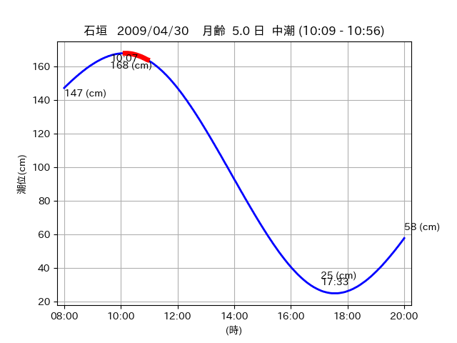
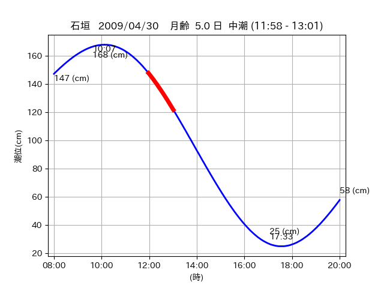
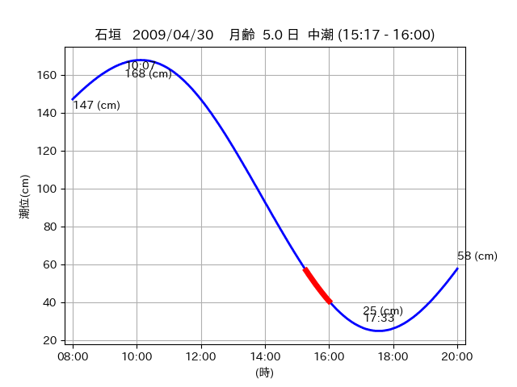

<!DOCTYPE html>
<html>
<head>
    
    <meta http-equiv="content-type" content="text/html; charset=UTF-8" />
    
        <script>
            L_NO_TOUCH = false;
            L_DISABLE_3D = false;
        </script>
    
    <style>html, body {width: 100%;height: 100%;margin: 0;padding: 0;}</style>
    <style>#map {position:absolute;top:0;bottom:0;right:0;left:0;}</style>
    <script src="https://cdn.jsdelivr.net/npm/leaflet@1.9.3/dist/leaflet.js"></script>
    <script src="https://code.jquery.com/jquery-3.7.1.min.js"></script>
    <script src="https://cdn.jsdelivr.net/npm/bootstrap@5.2.2/dist/js/bootstrap.bundle.min.js"></script>
    <script src="https://cdnjs.cloudflare.com/ajax/libs/Leaflet.awesome-markers/2.0.2/leaflet.awesome-markers.js"></script>
    <link rel="stylesheet" href="https://cdn.jsdelivr.net/npm/leaflet@1.9.3/dist/leaflet.css"/>
    <link rel="stylesheet" href="https://cdn.jsdelivr.net/npm/bootstrap@5.2.2/dist/css/bootstrap.min.css"/>
    <link rel="stylesheet" href="https://netdna.bootstrapcdn.com/bootstrap/3.0.0/css/bootstrap-glyphicons.css"/>
    <link rel="stylesheet" href="https://cdn.jsdelivr.net/npm/@fortawesome/fontawesome-free@6.2.0/css/all.min.css"/>
    <link rel="stylesheet" href="https://cdnjs.cloudflare.com/ajax/libs/Leaflet.awesome-markers/2.0.2/leaflet.awesome-markers.css"/>
    <link rel="stylesheet" href="https://cdn.jsdelivr.net/gh/python-visualization/folium/folium/templates/leaflet.awesome.rotate.min.css"/>
    
            <meta name="viewport" content="width=device-width,
                initial-scale=1.0, maximum-scale=1.0, user-scalable=no" />
            <style>
                #map_a63b638d1955ae2f8b5e91a432c9d6d1 {
                    position: relative;
                    width: 2048.0px;
                    height: 1600.0px;
                    left: 0.0%;
                    top: 0.0%;
                }
                .leaflet-container { font-size: 1rem; }
            </style>
        
</head>
<body>
    
    
            <div class="folium-map" id="map_a63b638d1955ae2f8b5e91a432c9d6d1" ></div>
        
</body>
<script>
    
    
            var map_a63b638d1955ae2f8b5e91a432c9d6d1 = L.map(
                "map_a63b638d1955ae2f8b5e91a432c9d6d1",
                {
                    center: [24.423, 124.071],
                    crs: L.CRS.EPSG3857,
                    ...{
  "zoom": 12,
  "zoomControl": true,
  "preferCanvas": false,
}

                }
            );

            

        
    
            var tile_layer_384bb0adedd2826f8bf15f4ecc6420e2 = L.tileLayer(
                "https://cyberjapandata.gsi.go.jp/xyz/seamlessphoto/{z}/{x}/{y}.jpg",
                {
  "minZoom": 0,
  "maxZoom": 18,
  "maxNativeZoom": 18,
  "noWrap": false,
  "attribution": "\u5730\u7406\u9662\u5730\u56f3",
  "subdomains": "abc",
  "detectRetina": false,
  "tms": false,
  "opacity": 1,
}

            );
        
    
            tile_layer_384bb0adedd2826f8bf15f4ecc6420e2.addTo(map_a63b638d1955ae2f8b5e91a432c9d6d1);
        
    
            var marker_a99b5af5fe1c7d182648cd9dbe00b62d = L.marker(
                [24.4544, 124.082],
                {
}
            ).addTo(map_a63b638d1955ae2f8b5e91a432c9d6d1);
        
    
            var icon_409dbe21aadb8bb3c3861c40aaffb8ec = L.AwesomeMarkers.icon(
                {
  "markerColor": "blue",
  "iconColor": "white",
  "icon": "info-sign",
  "prefix": "glyphicon",
  "extraClasses": "fa-rotate-0",
}
            );
        
    
        var popup_5fa0889d89fa3b6605c6b9b08c60cff4 = L.popup({
  "maxWidth": "100%",
});

        
            
                var html_7c70fe852e29a93d6bec61aef99a0302 = $(`<div id="html_7c70fe852e29a93d6bec61aef99a0302" style="width: 100.0%; height: 100.0%;"><table><tr><td></td></tr><tr><td><center>20090430 No.1 </center></table></td></tr></table</div>`)[0];
                popup_5fa0889d89fa3b6605c6b9b08c60cff4.setContent(html_7c70fe852e29a93d6bec61aef99a0302);
            
        

        marker_a99b5af5fe1c7d182648cd9dbe00b62d.bindPopup(popup_5fa0889d89fa3b6605c6b9b08c60cff4)
        ;

        
    
    
                marker_a99b5af5fe1c7d182648cd9dbe00b62d.setIcon(icon_409dbe21aadb8bb3c3861c40aaffb8ec);
            
    
            var marker_9e171b334f004ff7cac392b34e039e06 = L.marker(
                [24.4435, 124.0731],
                {
}
            ).addTo(map_a63b638d1955ae2f8b5e91a432c9d6d1);
        
    
            var icon_746580e200c48d96faee0347267bf7ea = L.AwesomeMarkers.icon(
                {
  "markerColor": "blue",
  "iconColor": "white",
  "icon": "info-sign",
  "prefix": "glyphicon",
  "extraClasses": "fa-rotate-0",
}
            );
        
    
        var popup_d1ff15f50ecabb88b3e531b0b4394d67 = L.popup({
  "maxWidth": "100%",
});

        
            
                var html_1e309291a0bf5d312eb4df57f3511a51 = $(`<div id="html_1e309291a0bf5d312eb4df57f3511a51" style="width: 100.0%; height: 100.0%;"><table><tr><td></td></tr><tr><td><center>20090430 No.2 </center></table></td></tr></table</div>`)[0];
                popup_d1ff15f50ecabb88b3e531b0b4394d67.setContent(html_1e309291a0bf5d312eb4df57f3511a51);
            
        

        marker_9e171b334f004ff7cac392b34e039e06.bindPopup(popup_d1ff15f50ecabb88b3e531b0b4394d67)
        ;

        
    
    
                marker_9e171b334f004ff7cac392b34e039e06.setIcon(icon_746580e200c48d96faee0347267bf7ea);
            
    
            var marker_54f073ca8ce1a55f4fa0271a34b335ca = L.marker(
                [24.4209, 124.0736],
                {
}
            ).addTo(map_a63b638d1955ae2f8b5e91a432c9d6d1);
        
    
            var icon_71e5e5f55a46e1a6d753e60fb4aaec92 = L.AwesomeMarkers.icon(
                {
  "markerColor": "orange",
  "iconColor": "white",
  "icon": "info-sign",
  "prefix": "glyphicon",
  "extraClasses": "fa-rotate-0",
}
            );
        
    
        var popup_f2476477aef49ba0b19c67d83a02e262 = L.popup({
  "maxWidth": "100%",
});

        
            
                var html_3e59e14b1f29002965d2a9179a72c41e = $(`<div id="html_3e59e14b1f29002965d2a9179a72c41e" style="width: 100.0%; height: 100.0%;"><table><tr><td></td></tr><tr><td><center>20090430 No.3 </center></table></td></tr></table</div>`)[0];
                popup_f2476477aef49ba0b19c67d83a02e262.setContent(html_3e59e14b1f29002965d2a9179a72c41e);
            
        

        marker_54f073ca8ce1a55f4fa0271a34b335ca.bindPopup(popup_f2476477aef49ba0b19c67d83a02e262)
        ;

        
    
    
                marker_54f073ca8ce1a55f4fa0271a34b335ca.setIcon(icon_71e5e5f55a46e1a6d753e60fb4aaec92);
            
    
            var poly_line_f831c2f33bc010055287e1dfd77aee15 = L.polyline(
                [[24.4209, 124.0736], [24.4256, 124.0693]],
                {"bubblingMouseEvents": true, "color": "#FF00FF", "dashArray": null, "dashOffset": null, "fill": false, "fillColor": "#FF00FF", "fillOpacity": 0.2, "fillRule": "evenodd", "lineCap": "round", "lineJoin": "round", "noClip": false, "opacity": 1.0, "smoothFactor": 1.0, "stroke": true, "weight": 3}
            ).addTo(map_a63b638d1955ae2f8b5e91a432c9d6d1);
        
</script>
</html>